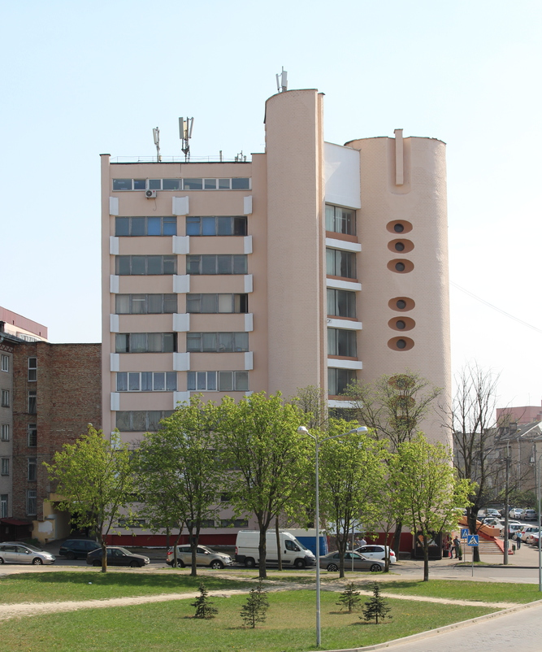

Факультет повышения квалификации руководящих работников и специалистов учреждения
образования
"Институт предпринимательской деятельности" образован в 2017 году для обеспечения учебного процесса
повышения квалификации в неразрывной связи с научно-инновационной деятельностью с целью реализации
государственной политики в области повышения квалификации руководящих работников и специалистов и
представляет собой динамично развивающуюся структуру УВО, которая призвана эффективно решать задачу
формирования высокопрофессиональных менеджеров-практиков, обладающих современными знаниями и навыками,
которые позволят эффективно осуществлять руководство организацией или ее структурными подразделениями.

Учебный процесс
Реализация образовательных программ на факультете строится на принципах системности,
научности,
перспективности и дифференцированного подхода. В организации учебного процесса широко используются
активные формы и методы проведения учебных занятий (ситуационное моделирование, тематические
дискуссии, круглые столы, анализ конкретных ситуаций, тренинги, игровое проектирование и др.).
Высокое качество учебного процесса на факультете обеспечивает профессорско-преподавательский
состав учреждения образования "Институт предпринимательской деятельности", руководители и
специалисты-практики.
Мы предлагаем Вам
обучение в лучшей форме!
Форма обучения - очная (дневная) и заочная (без отрыва от производства)
Под руководством профессоров, кандидатов наук и доцентов функционируют обучающие курсы (тематические
семинары, лектории, практикумы, тренинги и иные виды обучающих курсов) по актуальным вопросам
устойчивого развития субъектов малого и среднего предпринимательства.
Слушатели обеспечиваются учебно-методическими материалами
По заявкам организаций обучение может проводиться без отрыва от производства
непосредственно на предприятии (в дневное или вечернее время).
Группы формируются по мере поступления заявок. При наличии групповой заявки может
быть организовано обучение по предложенной тематике в любое удобное для заказчика время.
Слушателям, освоившим содержание образовательной программы повышения
квалификации руководящих работников и специалистов и прошедшим итоговую аттестацию, выдаются
следующие документы: свидетельство о повышении квалификации государственного образца,
сертификат
{kind=link}
{kind=link}
{kind=link}
ПРОГРАММЫ ПОВЫШЕНИЯ КВАЛИФИКАЦИИ Учреждения образования Института предпринимательской деятельности на 2019 год (на базе высшего образования)
Управление документами в организации
Одной из важнейших задач, стоящих перед любым руководителем, является
рациональная организация работы подчиненных. Для этого управленцам разного уровня
необходимо получать информацию и её в дальнейшем обрабатывать: проводить анализ,
готовить и принимать на основе имеющейся информации управленческие решения,
организовывать учет и контроль исполнения принятых решений. Сегодня интенсивность
этих процессов столь велика, а потери, связанные с несвоевременными и некачественными
решениями, столь существенны, что значение качественной организации управленческой
деятельности становиться первостепенным.
Приятно познакомиться!
Всегда будем рады Вам помочь!
Всегда будем рады Вам помочь!
Тяшкевич Татьяна Михайловна
Специалист
Специалист